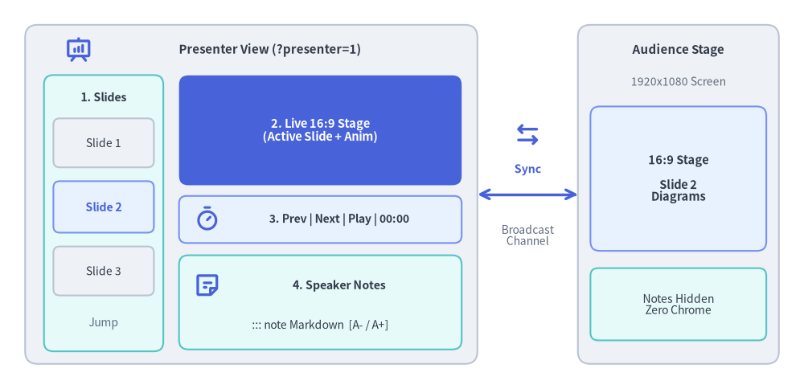
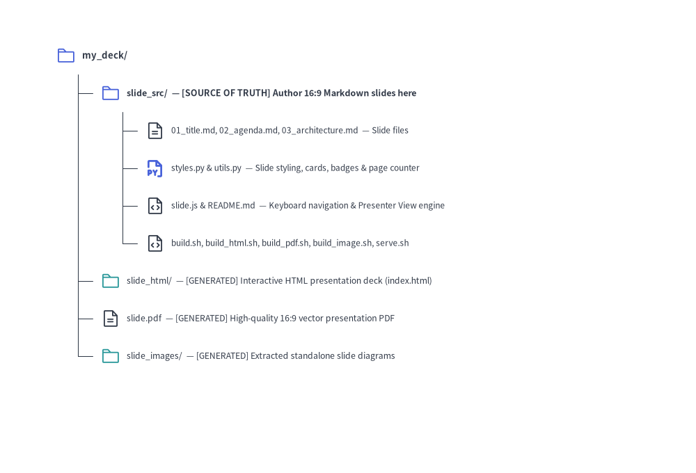

Slide Deck Project Guide (drawlib init slide)
The slide starter template creates 16:9 presentation slide decks with rich architectural diagrams, metrics cards, badges, and structured layouts.
Drawlib compiles your slide deck into both an interactive HTML web presentation and a 1-slide-per-page vector PDF, perfectly sized for conferences, client briefings, and team reviews.

Source Code
from drawlib.canvas import save, setup
from drawlib.icons import phosphor
from drawlib.lines import line
from drawlib.shapes import rectangle
from drawlib.styles import Styles
from drawlib.text import text
setup(width=128, height=62)
# Left Container: Presenter View Window (?presenter=1)
rectangle((40, 31), width=72, height=54, style=Styles.Neutral.patch(shape_r=2.0))
phosphor.presentation_chart((12.5, 54.0), width=4.4, style=Styles.PrimaryBold)
text((43.0, 54.0), "Presenter View (?presenter=1)", style=Styles.DarkBold.patch(text_size=10.8))
# Pane 1: Left Column (Slide Thumbnails Strip)
rectangle((16.5, 28.0), width=19, height=44, style=Styles.SecondaryNeutral.patch(shape_r=1.5))
text((16.5, 46.5), "1. Slides", style=Styles.DarkBold.patch(text_size=10.2))
rectangle((16.5, 39.2), width=16, height=7.8, style=Styles.Neutral.patch(shape_r=1.0), text="Slide 1", text_style=Styles.Dark.patch(text_size=10.0))
rectangle(
(16.5, 29.0),
width=16,
height=8.2,
style=Styles.PrimaryNeutral.patch(shape_r=1.0),
text="Slide 2",
text_style=Styles.PrimaryBold.patch(text_size=10.2),
)
rectangle((16.5, 18.8), width=16, height=7.8, style=Styles.Neutral.patch(shape_r=1.0), text="Slide 3", text_style=Styles.Dark.patch(text_size=10.0))
text((16.5, 10.5), "Jump", style=Styles.Muted.patch(text_size=10.0))
# Pane 2: Top-Right (Live 16:9 Current Slide Preview)
rectangle(
(51.0, 41.2),
width=45,
height=17.5,
style=Styles.PrimaryFlat.patch(shape_r=1.5),
text="2. Live 16:9 Stage\n(Active Slide + Anim)",
text_style=Styles.WhiteBold.patch(text_size=10.5),
)
# Pane 3: Middle-Right (Control & Timer Bar)
rectangle((51.0, 27.0), width=45, height=7.5, style=Styles.PrimaryNeutral.patch(shape_r=1.2))
phosphor.timer((33.0, 27.0), width=4.2, style=Styles.PrimaryBold)
text((54.0, 27.0), "3. Prev | Next | Play | 00:00", style=Styles.DarkBold.patch(text_size=10.0))
# Pane 4: Bottom-Right (Speaker Notes Pane)
rectangle((51.0, 13.8), width=45, height=15.0, style=Styles.SecondaryNeutral.patch(shape_r=1.5))
phosphor.note((33.0, 16.5), width=4.4, style=Styles.PrimaryBold)
text((54.0, 16.5), "4. Speaker Notes", style=Styles.DarkBold.patch(text_size=10.2))
text((51.0, 10.2), "::: note Markdown [A- / A+]", style=Styles.Dark.patch(text_size=10.0))
# Bidirectional BroadcastChannel Sync Connector
phosphor.arrows_left_right((84.0, 40.5), width=4.6, style=Styles.PrimaryBold)
line((76, 31), (92, 31), arrow_head="<->", style=Styles.PrimaryBold)
text((84.0, 35.0), "Sync", style=Styles.PrimaryBold.patch(text_size=10.2))
text((84.0, 24.5), "Broadcast\nChannel", style=Styles.Muted.patch(text_size=10.0))
# Right Container: Audience Main Stage Window
rectangle((108, 31), width=32, height=54, style=Styles.Neutral.patch(shape_r=2.0))
text((108, 54.0), "Audience Stage", style=Styles.DarkBold.patch(text_size=10.8))
text((108, 49.0), "1920x1080 Screen", style=Styles.Muted.patch(text_size=10.0))
rectangle(
(108, 33.5),
width=28,
height=23,
style=Styles.PrimaryNeutral.patch(shape_r=1.5),
text="16:9 Stage\n\nSlide 2\nDiagrams",
text_style=Styles.DarkBold.patch(text_size=10.5),
)
rectangle(
(108, 13.5),
width=28,
height=11.5,
style=Styles.SecondaryNeutral.patch(shape_r=1.2),
text="Notes Hidden\nZero Chrome",
text_style=Styles.Dark.patch(text_size=10.0),
)
save()
1. Project Initialization
Scaffold a presentation project using drawlib init:
# Scaffold standard slide project in current directory (creates 'slide_src/'):
drawlib init slide
# With custom target name, theme, and language (creates 'my_deck_src/'):
drawlib init slide my_deck -s google -l en
2. Directory Layout & Anatomy

Source Code
from drawlib.canvas import save, setup
from drawlib.icons import phosphor
from drawlib.smartarts import TreeNode
from drawlib.styles import Styles
setup(width=98, height=68)
TreeNode.register_drawing_item(
name="folder",
location="before",
padding_width=4.2,
function=phosphor.folder,
style=Styles.PrimaryFlat,
args={"width": 3.2},
)
TreeNode.register_drawing_item(
name="folder_out",
location="before",
padding_width=4.2,
function=phosphor.folder,
style=Styles.Secondary,
args={"width": 3.2},
)
TreeNode.register_drawing_item(
name="md",
location="before",
padding_width=4.2,
function=phosphor.file_text,
style=Styles.Dark,
args={"width": 3.2},
)
TreeNode.register_drawing_item(
name="py",
location="before",
padding_width=4.2,
function=phosphor.file_py,
style=Styles.PrimaryBold,
args={"width": 3.2},
)
TreeNode.register_drawing_item(
name="code",
location="before",
padding_width=4.2,
function=phosphor.file_code,
style=Styles.Dark,
args={"width": 3.2},
)
root = TreeNode(
"my_deck/",
text_style=Styles.DarkBold.patch(text_size=11.5),
line_style=Styles.DarkThin,
line_horizontal_margin=3.4,
line_horizontal_length=3.4,
line_vertical_margin=5.5,
).set_drawing_item("folder")
src = root.add(
"slide_src/ — [SOURCE OF TRUTH] Author 16:9 Markdown slides",
text_style=Styles.DarkBold.patch(text_size=11.0),
).set_drawing_item("folder")
src.add(
"01_title.md, 02_agenda.md, 03_arch.md — Slide files",
text_style=Styles.Dark.patch(text_size=10.5),
).set_drawing_item("md")
src.add(
"styles.py & utils.py — Slide styling, cards & page counter",
text_style=Styles.Dark.patch(text_size=10.5),
).set_drawing_item("py")
src.add(
"slide.js & README.md — Navigation & Presenter View engine",
text_style=Styles.Dark.patch(text_size=10.5),
).set_drawing_item("code")
src.add(
"build.sh, build_html.sh, build_pdf.sh, build_image.sh",
text_style=Styles.Dark.patch(text_size=10.5),
).set_drawing_item("code")
root.add(
"slide_html/ — [GENERATED] Interactive HTML deck (index.html)",
text_style=Styles.Dark.patch(text_size=10.5),
).set_drawing_item("folder_out")
root.add(
"slide.pdf — [GENERATED] High-quality 16:9 vector PDF",
text_style=Styles.Dark.patch(text_size=10.5),
).set_drawing_item("md")
root.add(
"slide_images/ — [GENERATED] Extracted standalone diagrams",
text_style=Styles.Dark.patch(text_size=10.5),
).set_drawing_item("folder_out")
root.draw(xy=(6, 60))
save()
3. Multiple Presentation Outputs
A slide project produces presentation artifacts tailored for every scenario:
| Output | Audience & Environment | Key Features | Build Script |
|---|---|---|---|
slide_html/index.html |
Interactive Presenting | 1920x1080 fixed stage, auto-scaling viewport, keyboard navigation (Space, Arrows, F), overview grid |
build_html.sh |
slide.pdf |
Offline Distribution | 1 slide per page, vector-sharp graphics, exact 16:9 aspect ratio (@page { size: 1920px 1080px; margin: 0; }) |
build_pdf.sh |
slide_images/ |
Slides & Social Media | Extracted standalone slide illustrations for external decks and sharing | build_image.sh |
4. Authoring Slides & Stage Blocks
Each Markdown file in slide_src/ (and any nested chapter subdirectories such as 01_intro/01_cover.md) represents a single 16:9 slide (1920x1080 stage), compiled in sorted relative-path order.
- Excluding Non-Slide Files (
_Prefix): Prefix any planning notes, outlines, or draft files/folders with an underscore_(e.g.,_planning.md,_drafts/) to exclude them from slide compilation. - Special Excluded Files:
README.mdandnavbar.mdare also automatically excluded from the slide deck.
Use ::: block (x, y) (w, h) containers alongside standard Markdown and helper components from utils.py (see Slide Stage Layout & API for the complete stage coordinate reference, layout templates, and drawlib.slide API):
::: block (80, 40) (1760, 60)
# Architecture Overview
:::
::: block (80, 140) (1760, 840)
```drawlib file:arch_flow.svg
from drawlib.canvas import clear, save, setup
from drawlib.shapes import rectangle
from drawlib.lines import line
from drawlib.styles import Styles
clear()
setup(width=176, height=84)
rectangle((35, 42), width=38, height=22, style=Styles.Neutral, text="Producer")
rectangle((88, 42), width=38, height=22, style=Styles.PrimaryFlat, text="Kafka", text_style=Styles.WhiteBold)
rectangle((141, 42), width=38, height=22, style=Styles.SecondaryNeutral, text="Consumer")
line((54, 42), (69, 42), arrow_head="->", style=Styles.DarkBold)
line((107, 42), (122, 42), arrow_head="->", style=Styles.DarkBold)
save()
```
:::
5. Modular Build Scripts Architecture
build_html.sh: Compiles slides into the web presentation deck inslide_html/index.html.build_pdf.sh: Uses headless Chromium to capture each slide into a multi-page vector PDF (slide.pdf).build_image.sh: Extracts embeddeddrawlibblocks into standalone diagram images inslide_images/.build.sh(Master Script): Runs HTML, PDF, and Image builds in sequence.
6. Local Preview & Presenting
Launch the local development preview server:
./slide_src/serve.sh
Or run directly:
uv run drawlib serve slide_html/
Keyboard Shortcuts & URL Deep-Linking:
→/Space/PageDown: Next slide←/PageUp: Previous slideF: Toggle full screenO/Esc: Toggle slide overview gridP/S: Open Presenter View in a synchronized companion windowA: Play / pause / resume animation on the current slide- URL Hash Deep-Linking (
#1,#2, ...): Navigating toindex.html#4jumps directly to Slide 4, and advancing slides updates the URL hash in real time for bookmarking and sharing. - Direct Presenter URL (
?presenter=1): Appending?presenter=1#1launches the window directly in Presenter View mode, synchronizing slide changes and animation playback across windows viaBroadcastChannel/localStorage.
Speaker Notes (::: note) & Presenter View:
Add speaker notes to any slide using ::: note (or ::: notes) blocks. If a slide contains multiple ::: note blocks, they are automatically joined with a blank line (\n\n) and rendered as Markdown in Presenter View (while remaining completely hidden on the main presentation screen and in PDF exports):
::: note
**Key Talking Points**:
- Emphasize single source of truth in Git.
- Click **Play Animation** (or press `A`) to step through the pipeline.
:::
Pressing P or S (or clicking the 🗒 button in the bottom-right control bar) opens Presenter View (?presenter=1), featuring:
- Left Column: Vertical scrollable list of live slide thumbnails for instant jumping.
- Right Top: Live 16:9 preview of the current slide.
- Right Middle (Control Bar):
◀ Prev/Next ▶navigation,▶ Play Animationbutton (synchronized with the main window; automatically disabled/grayed out on slides without animations), and an elapsed presentation timer (00:00). - Right Bottom (Speaker Notes): Compiled speaker notes with
A-/A+font-size controls.
Interactive Animation Playback (anim-trigger, anim-loop, anim-pause):
When embedding APNG (.png / .apng) or Animated WebP (.webp) diagrams inside slides, you can attach playback control attributes to the drawlib code fence:
```drawlib file:workflow.webp anim-trigger:click anim-loop:once anim-pause:2,4
```
anim-trigger:click(auto|click): Holds on Frame 0 until clicked by the presenter.anim-loop:once(once|infinite): Stops on the final frame (ENDED); clicking again replays from Frame 0.anim-pause:2,4: Pauses at 0-based frame indices2and4(PAUSED); clicking resumes to the next step.- Vector PDF Export (
build_pdf.sh): Automatically renders Frame 0 onto the slide without the interactive play badge.